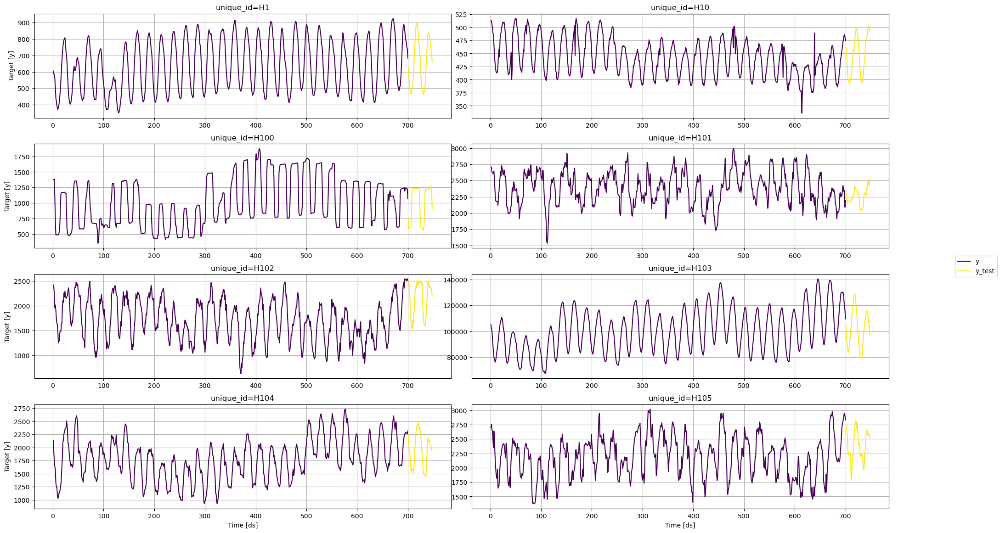
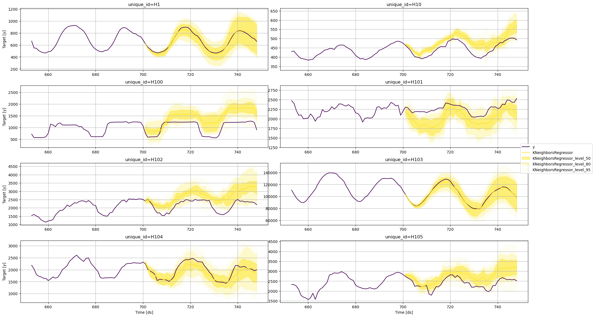
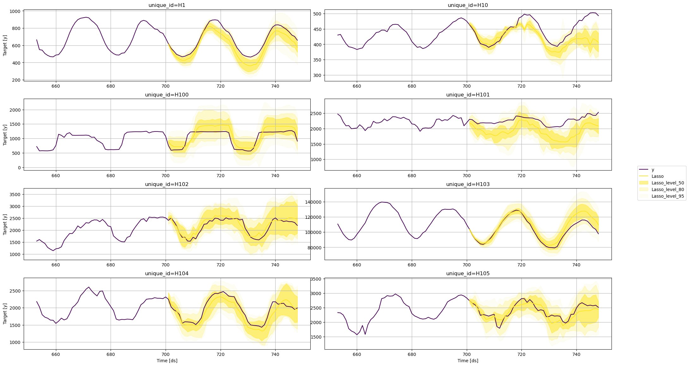
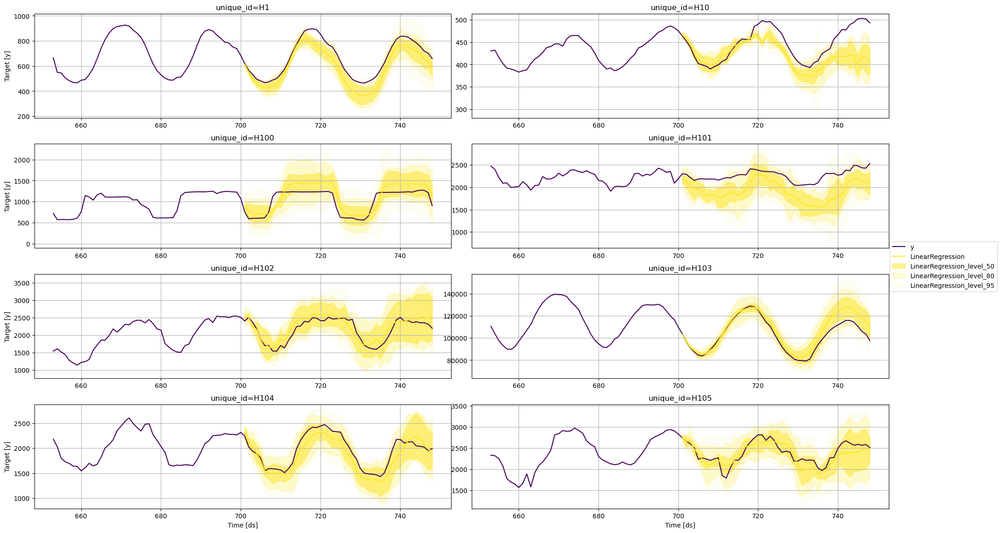
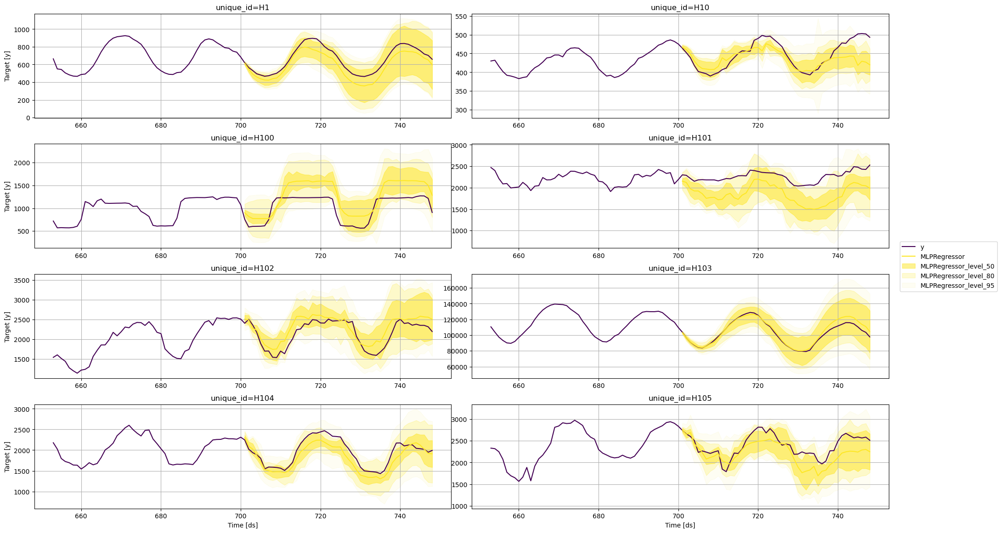
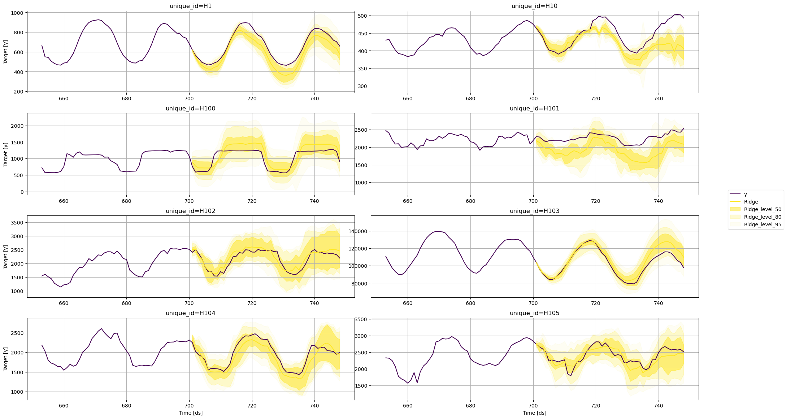

import pandas as pd
from utilsforecast.plotting import plot_seriesProbabilistic forecasting
In this example, we’ll implement prediction intervals
Prerequesites
This tutorial assumes basic familiarity with MLForecast. For a minimal example visit the Quick Start
Introduction
When we generate a forecast, we usually produce a single value known as the point forecast. This value, however, doesn’t tell us anything about the uncertainty associated with the forecast. To have a measure of this uncertainty, we need prediction intervals.
A prediction interval is a range of values that the forecast can take with a given probability. Hence, a 95% prediction interval should contain a range of values that include the actual future value with probability 95%. Probabilistic forecasting aims to generate the full forecast distribution. Point forecasting, on the other hand, usually returns the mean or the median or said distribution. However, in real-world scenarios, it is better to forecast not only the most probable future outcome, but many alternative outcomes as well.
With MLForecast you can train sklearn models to generate point forecasts. It also takes the advantages of ConformalPrediction to generate the same point forecasts and adds them prediction intervals. By the end of this tutorial, you’ll have a good understanding of how to add probabilistic intervals to sklearn models for time series forecasting. Furthermore, you’ll also learn how to generate plots with the historical data, the point forecasts, and the prediction intervals.
Important
Although the terms are often confused, prediction intervals are not the same as confidence intervals.
Warning
In practice, most prediction intervals are too narrow since models do not account for all sources of uncertainty. A discussion about this can be found here.
Outline:
- Install libraries
- Load and explore the data
- Train models
- Plot prediction intervals
Tip
You can use Colab to run this Notebook interactively 
Install libraries
Install the necessary packages using pip install mlforecast utilsforecast
Load and explore the data
For this example, we’ll use the hourly dataset from the M4 Competition. We first need to download the data from a URL and then load it as a pandas dataframe. Notice that we’ll load the train and the test data separately. We’ll also rename the y column of the test data as y_test.
train = pd.read_csv('https://auto-arima-results.s3.amazonaws.com/M4-Hourly.csv')
test = pd.read_csv('https://auto-arima-results.s3.amazonaws.com/M4-Hourly-test.csv')train.head()| unique_id | ds | y | |
|---|---|---|---|
| 0 | H1 | 1 | 605.0 |
| 1 | H1 | 2 | 586.0 |
| 2 | H1 | 3 | 586.0 |
| 3 | H1 | 4 | 559.0 |
| 4 | H1 | 5 | 511.0 |
test.head()| unique_id | ds | y | |
|---|---|---|---|
| 0 | H1 | 701 | 619.0 |
| 1 | H1 | 702 | 565.0 |
| 2 | H1 | 703 | 532.0 |
| 3 | H1 | 704 | 495.0 |
| 4 | H1 | 705 | 481.0 |
Since the goal of this notebook is to generate prediction intervals, we’ll only use the first 8 series of the dataset to reduce the total computational time.
n_series = 8
uids = train['unique_id'].unique()[:n_series] # select first n_series of the dataset
train = train.query('unique_id in @uids')
test = test.query('unique_id in @uids')We can plot these series using the plot_series function from the utilsforecast library. This function has multiple parameters, and the required ones to generate the plots in this notebook are explained below.
df: Apandasdataframe with columns [unique_id,ds,y].forecasts_df: Apandasdataframe with columns [unique_id,ds] and models.plot_random: bool =True. Plots the time series randomly.models: List[str]. A list with the models we want to plot.level: List[float]. A list with the prediction intervals we want to plot.engine: str =matplotlib. It can also beplotly.plotlygenerates interactive plots, whilematplotlibgenerates static plots.
fig = plot_series(train, test.rename(columns={'y': 'y_test'}), models=['y_test'], plot_random=False)
Train models
MLForecast can train multiple models that follow the sklearn syntax (fit and predict) on different time series efficiently.
For this example, we’ll use the following sklearn baseline models:
To use these models, we first need to import them from sklearn and then we need to instantiate them.
from mlforecast import MLForecast
from mlforecast.target_transforms import Differences
from mlforecast.utils import PredictionIntervals
from sklearn.linear_model import Lasso, LinearRegression, Ridge
from sklearn.neighbors import KNeighborsRegressor
from sklearn.neural_network import MLPRegressor# Create a list of models and instantiation parameters
models = [
KNeighborsRegressor(),
Lasso(),
LinearRegression(),
MLPRegressor(),
Ridge(),
]To instantiate a new MLForecast object, we need the following parameters:
models: The list of models defined in the previous step.
target_transforms: Transformations to apply to the target before computing the features. These are restored at the forecasting step.lags: Lags of the target to use as features.
mlf = MLForecast(
models=[Ridge(), Lasso(), LinearRegression(), KNeighborsRegressor(), MLPRegressor(random_state=0)],
freq=1,
target_transforms=[Differences([1])],
lags=[24 * (i+1) for i in range(7)],
)Now we’re ready to generate the point forecasts and the prediction intervals. To do this, we’ll use the fit method, which takes the following arguments:
data: Series data in long format.id_col: Column that identifies each series. In our case,unique_id.time_col: Column that identifies each timestep, its values can be timestamps or integers. In our case,ds.target_col: Column that contains the target. In our case,y.prediction_intervals: APredicitonIntervalsclass. The class takes two parameters:n_windowsandh.n_windowsrepresents the number of cross-validation windows used to calibrate the intervals andhis the forecast horizon. The strategy will adjust the intervals for each horizon step, resulting in different widths for each step.
mlf.fit(
train,
prediction_intervals=PredictionIntervals(n_windows=10, h=48),
);After fitting the models, we will call the predict method to generate forecasts with prediction intervals. The method takes the following arguments:
horizon: An integer that represent the forecasting horizon. In this case, we’ll forecast the next 48 hours.level: A list of floats with the confidence levels of the prediction intervals. For example,level=[95]means that the range of values should include the actual future value with probability 95%.
levels = [50, 80, 95]
forecasts = mlf.predict(48, level=levels)
forecasts.head()| unique_id | ds | Ridge | Lasso | LinearRegression | KNeighborsRegressor | MLPRegressor | Ridge-lo-95 | Ridge-lo-80 | Ridge-lo-50 | ... | KNeighborsRegressor-lo-50 | KNeighborsRegressor-hi-50 | KNeighborsRegressor-hi-80 | KNeighborsRegressor-hi-95 | MLPRegressor-lo-95 | MLPRegressor-lo-80 | MLPRegressor-lo-50 | MLPRegressor-hi-50 | MLPRegressor-hi-80 | MLPRegressor-hi-95 | |
|---|---|---|---|---|---|---|---|---|---|---|---|---|---|---|---|---|---|---|---|---|---|
| 0 | H1 | 701 | 612.418170 | 612.418079 | 612.418170 | 615.2 | 612.651532 | 590.473256 | 594.326570 | 603.409944 | ... | 609.45 | 620.95 | 627.20 | 631.310 | 584.736193 | 591.084898 | 597.462107 | 627.840957 | 634.218166 | 640.566870 |
| 1 | H1 | 702 | 552.309298 | 552.308073 | 552.309298 | 551.6 | 548.791801 | 498.721501 | 518.433843 | 532.710850 | ... | 535.85 | 567.35 | 569.16 | 597.525 | 497.308756 | 500.417799 | 515.452396 | 582.131207 | 597.165804 | 600.274847 |
| 2 | H1 | 703 | 494.943384 | 494.943367 | 494.943384 | 509.6 | 490.226796 | 448.253304 | 463.266064 | 475.006125 | ... | 492.70 | 526.50 | 530.92 | 544.180 | 424.587658 | 436.042788 | 448.682502 | 531.771091 | 544.410804 | 555.865935 |
| 3 | H1 | 704 | 462.815779 | 462.815363 | 462.815779 | 474.6 | 459.619069 | 409.975219 | 422.243593 | 436.128272 | ... | 451.80 | 497.40 | 510.26 | 525.500 | 379.291083 | 392.580306 | 413.353178 | 505.884959 | 526.657832 | 539.947054 |
| 4 | H1 | 705 | 440.141034 | 440.140586 | 440.141034 | 451.6 | 438.091712 | 377.999588 | 392.523016 | 413.474795 | ... | 427.40 | 475.80 | 488.96 | 503.945 | 348.618034 | 362.503767 | 386.303325 | 489.880099 | 513.679657 | 527.565389 |
5 rows × 37 columns
test = test.merge(forecasts, how='left', on=['unique_id', 'ds'])Plot prediction intervals
To plot the point and the prediction intervals, we’ll use the plot_series function again. Notice that now we also need to specify the model and the levels that we want to plot.
KNeighborsRegressor
fig = plot_series(
train,
test,
plot_random=False,
models=['KNeighborsRegressor'],
level=levels,
max_insample_length=48
)
Lasso
fig = plot_series(
train,
test,
plot_random=False,
models=['Lasso'],
level=levels,
max_insample_length=48
)
LineaRegression
fig = plot_series(
train,
test,
plot_random=False,
models=['LinearRegression'],
level=levels,
max_insample_length=48
)
MLPRegressor
fig = plot_series(
train,
test,
plot_random=False,
models=['MLPRegressor'],
level=levels,
max_insample_length=48
)
Ridge
fig = plot_series(
train,
test,
plot_random=False,
models=['Ridge'],
level=levels,
max_insample_length=48
)
From these plots, we can conclude that the uncertainty around each forecast varies according to the model that is being used. For the same time series, one model can predict a wider range of possible future values than others.
References
Give us a ⭐ on Github